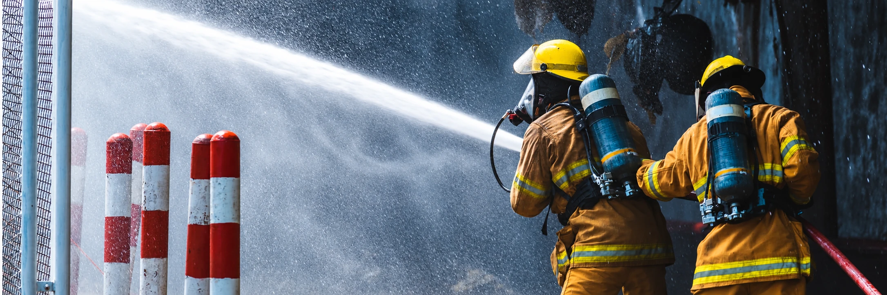

Rede sob observação
A inspeção verifica a integridade hidráulica e as condições de funcionamento no ponto de fim de linha da rede de sprinklers.

SISTEMAS DE PREVENÇÃO
Verificação do dreno de fim de linha para avaliar vazão, pressão e condições da rede de sprinklers.
Solicitar propostaVerificação do dreno de fim de linha para avaliar vazão, pressão e condições da rede de sprinklers.
A inspeção verifica a integridade hidráulica e as condições de funcionamento no ponto de fim de linha da rede de sprinklers.
O teste observa vazão e pressão, válvulas e registros, além de possíveis obstruções, incrustações ou vazamentos.
A frequência de inspeções e ensaios é definida conforme a instalação, as normas aplicáveis, o fabricante e as exigências locais.
Para avaliar a rede e definir os ensaios adequados à instalação, fale com nossa equipe.